In this code call-out we will explore calculations on power, and in particular will focus on considerations of the minimum detectable effect and power curves. This will be based on the study of Alan and Kubilay (2025) who conduct a clustered randomisation, and study a behavioural intervention in schools and its impact on a range of educational, psycho-social, and well-being outcomes.
In particular, the authors document their power calculations in their pre-registration, which can be found on the AEA Social Science Repository. As they are considering a clustered randomisation, we need to know various elements to determine power including the sample size in treated and control clusters, the number of clusters themselves, and expectations about the standard deviation of outcomes of interest as well as the intra-cluster correlation of these outcomes.
The key details which the authors use to calculate power are laid out in their pre-analysis plan, and reproduced below for ease of access. Of note, they propose to randomly assign 32 clusters to receive treatment and 33 to act as controls, with 350 observations per cluster. Additionally, the note the assumed standard deviations of of each variable as SD, and the intra-cluster correlation as ICC.
Table 1: Power and Minimum Detectable Effects with Clustering
Variables
Clusters in Treatment
Clusters in Control
Cluster Size
N
Mean
MDE
SD
ICC
Percent Change
Turkish Score
32
33
350
22750
4.294
0.571
2.456
0.109
0.133
Math Score
32
33
350
22750
3.914
0.535
2.372
0.103
0.137
Bullying in Class
32
33
350
22750
0.470
0.047
0.499
0.016
0.100
Bullying in School
32
33
350
22750
0.490
0.046
0.500
0.015
0.094
Sensitivity to World Issues
32
33
350
22750
3.413
0.095
0.881
0.021
0.028
Locus of Control
32
33
350
22750
3.200
0.073
0.542
0.035
0.023
Impulsivity
32
33
350
22750
2.116
0.035
0.570
0.005
0.017
Perspective Taking
32
33
350
22750
3.166
0.105
0.659
0.049
0.033
Mental Wellbeing
32
33
350
22750
3.040
0.049
0.524
0.015
0.016
Belonging
32
33
350
22750
2.858
0.068
0.660
0.019
0.024
Autonomy
32
33
350
22750
2.593
0.052
0.581
0.014
0.020
In-Degree Friendship
32
33
350
22750
2.767
0.373
2.613
0.039
0.135
The details above can be used to calculate minimum detectable effect sizes (MDE in the table), as well as more generally used to determine the power to detect specific effects. To see a specific calculation, remember that as laid in (7.14) and related discussion in the book, to calculating power in a clustered randomisation we can apply the following: \[
(1-\beta)=\Phi\left(\frac{\tau}{\sqrt{\sigma^2\left[\frac{1+(N_{c0}-1)\rho}{N_{c0}c_{0}}+\frac{1+(N_{c1}-1)\rho}{N_{c1}c_{1}}\right]}}-\Phi^{-1}(1-\alpha/2)\right),
\tag{1}\] where \(N_{c0}\) and \(N_{c1}\) refer to the number of units per control and treated cluster respectively, \(c_0\) and \(c_1\) refer to the number of control and treated clusters, and \(\rho\) refers to the intra-cluster correlation.
Let’s confirm that this all makes sense, by conindering a specific row from the table above. Below we can confirm that based on their assumptions, the authors do indeed have 80% power to detect the reported MDE in row 1 (0.571). We do this below, seeing that indeed, the reported effect of 0.571 can be detected with the stated level of power.
It is also easy enough for us to see how we can arrive at this minimum detectable effect directly. In this case, rather than having an effect of interest \(\tau\) in (Equation 1) and wishing to find the power, we wish to find the minimum detectable effect is power is set to 0.8. It is easy enough to see that if we apply an inverse normal transformation to each side of (Equation 1) and re-arrange, we can calculate our MDE (\(\tau\)) as: \[
\tau = \left[\Phi^{-1}\left(1-\beta\right) + \Phi^{-1}\left(1-\alpha/2\right)\right]\times SE,
\] where SE is simply the standard error term in the denominator of (Equation 1). We do this below, seeing how we can arrive to the value of 0.571 (approximately) below:
More generally, instead of working with a specific effect to achieve a desired power, we could generate power curves to plot the power to detect an effect if the true effect were indeed some specific value. This in essence maps the formula in (Equation 1) to a series of effects \(\tau\), plotting the resulting power. Below we will generate and plot such a power curve. We do so for effects ranging from 0 to 0.7:
import matplotlib.pyplot as plteffects = np.linspace(0, 1, 51)power_curve = norm.cdf(effects / SE - norm.ppf(1- alpha/2))plt.plot(effects, power_curve)plt.xlabel(r'True effect ($\tau$)')plt.ylabel('Power')plt.ylim(0, 1)plt.show()
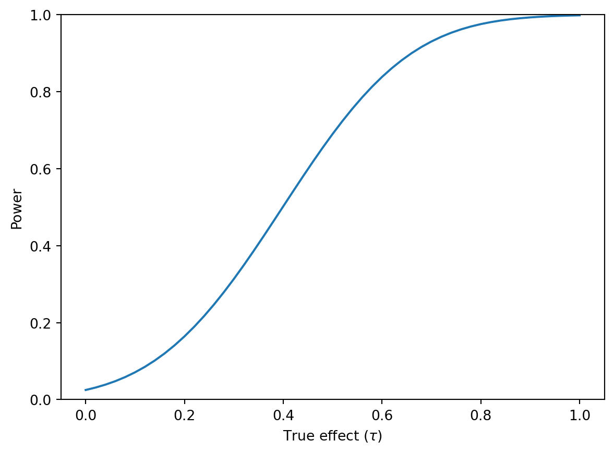
Power curve (clustered randomization)
Upon doing this, we see the standard features of a power curve with an ‘upside-down’ normal shape, and see that this reaches the commonly employed 80% power threshold at the value indicated above (0.571), approximately reaching 100% power at effect sizes of 1.
Of course, the power in this setting depends upon a number of quantities, and not the true effect. We can see this by considering the power curve corresponding to each outcome laid out in Table Table 1. Below we loop through each of the outcomes from the table taking their assumed standard deviation (SDs) and intra-cluster correlation (ICCs), calculating the resulting standard error, and then calculating the power curve at the values for effect defined above. Rather than looping sequentially, Python handles the simultaneous iteration over SDs and ICCs through NumPy’s vectorised operations, computing all 12 standard errors and power curves at once by treating both as arrays.
import pandas as pd# Standard deviations and ICCsSDs = np.array([2.456, 2.372, 0.499, 0.500, 0.881, 0.542, 0.570, 0.659, 0.524, 0.660, 0.581, 2.613])ICCs = np.array([0.109, 0.103, 0.016, 0.015, 0.021, 0.035, 0.005, 0.049, 0.015, 0.019, 0.014, 0.033])# Clustered variance componentsn1 = (1+ (350-1) * ICCs) / (32*350)n0 = (1+ (350-1) * ICCs) / (33*350)# Standard errorsSEs = np.sqrt(SDs**2* (n0 + n1))# Range of effectseffect = np.linspace(0, 1, 51)# Power curves for each SEpower_mat = np.column_stack([norm.cdf(effect / se - norm.ppf(0.975)) for se in SEs])# Build DataFramedf = pd.DataFrame(np.column_stack([effect, power_mat]), columns=["effect"] + [f"power_y{i+1}"for i inrange(len(SEs))])
We can now plot these power curves for each of the outcomes, where we clearly see that the power to detect specific effects varies considerably by outcomes, as laid out in Table Table 1.
outcome_cols = [c for c in df.columns if c.startswith("power_y")]# Long formatdf_long = df.melt(id_vars="effect", value_vars=outcome_cols, var_name="outcome", value_name="power")# Keep effects < 0.6df_long = df_long[df_long["effect"] <0.6].copy()labels = ["Turkish score", "Math score","Bullying (class)", "Bullying (school)","Sensitivity", "Locus of control","Impulsivity", "Perspective","Wellbeing", "Belonging","Autonomy", "Friendship"]mapper = {f"power_y{i+1}": labels[i] for i inrange(len(labels))}df_long["outcome"] = df_long["outcome"].map(mapper)plt.figure()for name, grp in df_long.groupby("outcome"): grp = grp.sort_values("effect") plt.plot(grp["effect"], grp["power"], label=name)plt.xlabel(r'True effect ($\tau$)')plt.ylabel('Power')plt.xticks(np.arange(0.0, 0.61, 0.1))plt.legend(title=None, fontsize=8, ncol=2)plt.show()
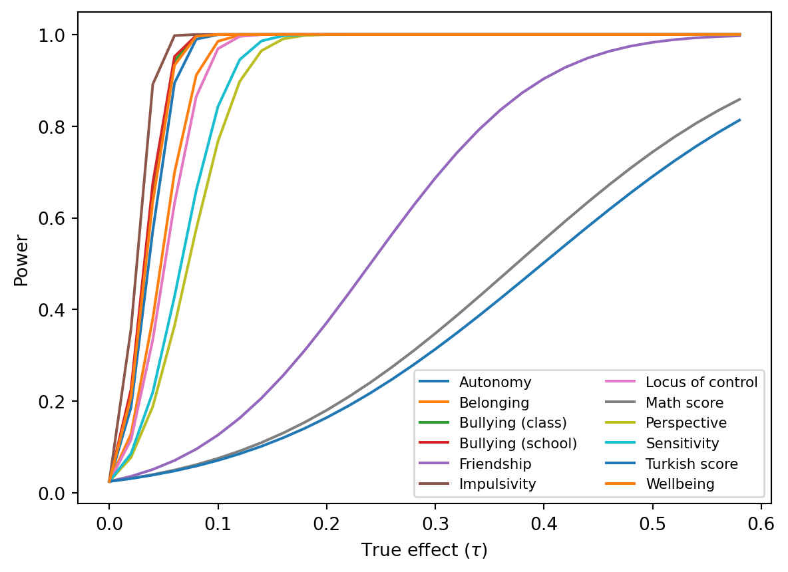
The above assumes clustered randomisation. Of course if we were working with unit-level randomisation we could proceed similarly, but in this case our standard error calculation is far simpler, and we would be very likely be more powered given the larger effective sample size.
Power curve for effect on test scores (individual randomization)
Finally note that if instead of asking what the MDE is for a given case we would rather determine the minimum required sample size to determine an effect, we can do so by applying (7.12) in the book. Let’s see this for a power of 0.8:
While there are various other calculations we can make (or indeed, we could generate power curves by simulation in cases where settings are more complex), above we see that it is relatively straightforward to both generate power curves as well as arrive at minimum detectable effect sizes or minimum sample sizes required to detect effects. This is a key step in experimental design where we will wish to ensure that our study is actually sufficiently powerful to detect any real effects that may exist with sufficient precision.
Code call-out 7.2: Bonferronni, Holm and Romano-Wolf Procedures
We are interested in examining a number of corrections for multiple hypothesis tests which provide control of the family-wise error rate of tests. To do so, we will use data from Charness and Gneezy (2009). In their paper, they examine whether a group of individuals who receive an incentive to exercise are observed to have greater improvements in a number of markers of health compared with individuals who are not incentivised to go to the gym. Below we load the data from their “Experiment 2”, which has be most complete set of health and biometric measures, make a small number of changes to correct for a missing value, and remove a variable which we will regenerate ourselves below:
import numpy as npimport pandas as pd#df, meta = pd.read_stata("data/Charness_Gneezy_2009.dta", convert_missing=True, preserve_dtypes=False), None#if isinstance(df, tuple): # df, meta = dfdf = pd.read_stata("data/Charness_Gneezy_2009.dta")# Replace 0 with NaN in bmi2df["bmi2"] = df["bmi2"].replace(0, pd.NA)if"bmi_diff"in df.columns: df = df.drop(columns=["bmi_diff"])# Keep only rows where one != 1df = df[df["one"] !=1].copy()
In the last step, we have dropped all observations flagged as having one==1. Charness and Gneezy (2009) actually consider two treatments: one in which individuals are given one reminder and one in which they are given eight reminders, as well as a control condition. In the interests of simplicity here we consider only those treated more intensively with eight reminders (eight==1), though if we wished, we could reproduce the entire analysis below by comparing those treated with one reminder to the control condition.
Here we will consider the tests documented in Table III of Charness and Gneezy (2009) in which changes in biometric measures of treated individuals (eight==1) are compared with measures among untreated individuals (eight==0). Below we will define a local which contains each of the variables studied, and then we generate an outcome which captures the change in these measures over time for each individual. This is based on differences between the third measure taken (a follow-up wave), and a baseline measure.
vars_ = ["bodyfat", "pulse", "weight", "bmi", "waist", "sbp", "dbp"]# Create *_diff variables as var1 - var3for v in vars_: df[f"{v}_diff"] = df[f"{v}1"] - df[f"{v}3"]
We will seek to calculate 4 p-values for each test. Specifically, we will calculate p-values not considering the fact that we are conducting multiple tests, and we will generate p-values correcting for multiple testing by applying the procedures of Bonferroni, Holm, and Romano and Wolf. We will start by simply generating an empty matrix which we will fill out with each procedure below:
# Initialize DataFrame of p-values with NaNpvalues = pd.DataFrame( data=np.nan, index=vars_, columns=["uncorrected", "Bonferroni", "Holm", "Romano-Wolf"])print(pvalues)
uncorrected Bonferroni Holm Romano-Wolf
bodyfat NaN NaN NaN NaN
pulse NaN NaN NaN NaN
weight NaN NaN NaN NaN
bmi NaN NaN NaN NaN
waist NaN NaN NaN NaN
sbp NaN NaN NaN NaN
dbp NaN NaN NaN NaN
Let’s start by simply running the regression which essentially replicates the results of Charness and Gneezy (2009). Specifically, we will regress each differenced measure on treatment receipt, which, given random assignment, should allow us to calculate an ATT. In practice, Charness and Gneezy (2009) document these differences in a more extended manner in their Table III, but if we compare the output of the below regressions to this Table, we can see that estimated effects line up very well.
import statsmodels.api as smfrom statsmodels.stats.sandwich_covariance import cov_hc1from scipy.stats import norm for v in vars_: y = df[f"{v}_diff"].to_numpy() X = sm.add_constant(df["eight"].to_numpy()) model = sm.OLS(y, X, missing="drop").fit(cov_type='HC1')print(model.summary())
Because in certain multiple-hypothesis correction procedures below we will wish to work from the most to least significant hypothesis, below we we-order our variable list in terms of their statistical significance, ie in ordered from lowest p-value to highest.
Now, let’s actually start to examine p-values corresponding to each test. Below we will consider the most simple case where no correction is implemented at all. Below, we simply iterate through variables, running the regression with each outcome as a dependent variable, and saving the resulting p-value in the pvalues matrix. You may note that by usign pvalues.loc, we can simply save resulting p-values based on the name of the variable in the pvalues DataFrame we generated previously.
for v in vars_: y = df[f"{v}_diff"].to_numpy() X = sm.add_constant(df["eight"].to_numpy()) model = sm.OLS(y, X, missing="drop").fit() cov = cov_hc1(model) se = np.sqrt(np.diag(cov)) tvals = model.params / se pvals =2* (1- norm.cdf(np.abs(tvals)))# Save p-value for "eight" pvalues.loc[v, "uncorrected"] = pvals[1]print(pvalues)
uncorrected Bonferroni Holm Romano-Wolf
bodyfat 0.000002 NaN NaN NaN
pulse 0.060305 NaN NaN NaN
weight 0.128442 NaN NaN NaN
bmi 0.093877 NaN NaN NaN
waist 0.061084 NaN NaN NaN
sbp 0.188071 NaN NaN NaN
dbp 0.872875 NaN NaN NaN
Here we see that we have simply filled in the first column of the matrix, observing an ascending set of values corresponding to each outcome.
Bonferroni’s correction
Let’s now implement the Bonferroni correction. As laid out in Section 7.3.2.1 of the book, this is a relatively simple procedure in which we simply multiply all p-values by the total number of tests (the logic of this is discussed in the chapter itself). We do this below, noting just one specific point of care, which is that we want to ensure that p-values are capped at 1, and so we use the clip() function below.
m =len(vars_order)pvalues["Bonferroni"] = (pvalues["uncorrected"] * m).clip(upper=1.0)print(pvalues)
uncorrected Bonferroni Holm Romano-Wolf
bodyfat 0.000002 0.000017 NaN NaN
pulse 0.060305 0.422132 NaN NaN
weight 0.128442 0.899097 NaN NaN
bmi 0.093877 0.657141 NaN NaN
waist 0.061084 0.427586 NaN NaN
sbp 0.188071 1.000000 NaN NaN
dbp 0.872875 1.000000 NaN NaN
Here we see that–as expected–our Bonferroni p-values simply inflate all baseline p-values constantly, though suggest that even with this most demanding criteria, impacts of treatment on bodyfat are still statistically significant.
Holm’s correction
As we saw in the book, we can gain power while still maintaining the familywise error rate by following step-wise techniques. A first of these is Holm’s correction (see section 7.3.2). We implement this below, where the key point to note is that here instead of multiplying all p-values by 7, we mutliply the first (lowest) p-value by 7, then the second lowest by 6, and so on and so forth until the final p-value is simply returned as is.
Perhaps the only important thing to note in this procedure is that now we must ensure that we enforce monotonicity. Monotonicity simply implies that if we have some original p-value ordering from lowest to highest, our resulting corrected p-values should still maintain this ordering. For this reason, if some variable with a higher uncorrected p-value returns a lower corrected p-value, we simply replace the corrected p-value with the value of the p-value observed in the preceding variable. This is implemented below on the lines following the comment # enforce monotonicity.
prev =0.0n =len(pvalues)for i, v inenumerate(vars_order): m = n - i pval =min(pvalues.loc[v, "uncorrected"] * m, 1.0)# enforce monotonicityif pval < prev: pvalues.loc[v, "Holm"] = prevelse: pvalues.loc[v, "Holm"] = pval prev = pvalprint(pvalues)
uncorrected Bonferroni Holm Romano-Wolf
bodyfat 0.000002 0.000017 0.000017 NaN
pulse 0.060305 0.422132 0.361827 NaN
weight 0.128442 0.899097 0.385327 NaN
bmi 0.093877 0.657141 0.375509 NaN
waist 0.061084 0.427586 0.361827 NaN
sbp 0.188071 1.000000 0.385327 NaN
dbp 0.872875 1.000000 0.872875 NaN
Here we see the additional power of Holm’s correction over Bonferroni. With the exception of the lowest p-value, p-values are all strictly lower than their counterpart in Bonferroni. We also observe a second regularity which is that the lowest p-value corresponds to that of the Bonferroni procedure, while the highest corresponds to the uncorrected p-value.
Romano-Wolf
While Holm offers benefits over Bonferroni in terms of power, this is still based on the “worst-case scenario” that all test statistics are entirely independent. As laid out in Romano and Wolf, We can improve on this using bootstrap-based procedures which directly estimate the dependence among tests. A full description of this test and its logic can be found at the end of Section 7.3.2.1 of the book.
Here we will implement this procedure “by hand”. To do so, we must estimate many bootstrap replicates of each model, and in each case save the resulting test-statistic of each test once the null hypothesis (in this case of a 0 effect) has been imposed. We will begin this procedure by setting up a new frame with a large number of observations to store the test statistic from each bootstrap replicate, and in this frame we will generate a variable to store the statistic corresponding to each variable:
# Number of bootstrap replicationsB =5000bstraps = pd.DataFrame( data=np.nan, index=range(B), columns=["bodyfat", "pulse", "waist", "bmi", "weight", "sbp", "dbp"])
Now, before we actually go about implementing the bootstrap procedure, we will just re-estimate each of our true regressions, saving the estimated point estimate and t-statistic for use below.
beta = {}tstat = {}for v in vars_: y = df[f"{v}_diff"].to_numpy() X = sm.add_constant(df["eight"].to_numpy()) model = sm.OLS(y, X, missing="drop").fit() cov = cov_hc1(model) se = np.sqrt(np.diag(cov)) coef_eight = model.params[1] # "eight" is second param se_eight = se[1] beta[v] = coef_eight tstat[v] = coef_eight / se_eightprint("beta:", beta)print("tstat:", tstat)
With this in hand, we will do the bootstrap procedure itself. Specifically, we will run a series of B resamples, and in each loop we will calculate the t-statistic where we impose the null hypothesis of a zero effect. This is calculated (in each bootstrap replicate \(b\)), as: \[
t = \frac{\widehat\tau^{*b}-\widehat\tau}{\widehat\sigma^{*b}},
\] where \(\widehat\tau^{*b}\) and \(\widehat\sigma^{*b}\) refer to the bootstrap estimate and standard error respectively, and \(\widehat\tau\) the original estimate. The idea of this is that on average this quantity will be centred around 0 across all bootstraps, but it will correctly capture the variation inherent in our data.
We do this below, iterating through each our B boostrap replicates, and within each replicate, estimate each of our outcomes and the resulting set of t-statistics. We take the absolute value of these as below we will be interested in considering whether our original t-statistic is extreme (either high or low) compared to our bootstrap t-statistics, and this can easily be done by just taking absolute values of each, and comparing the absolute values. We then store each t-statistic in our data frame called bstraps which we will return to use below.
# Bootstrap loop n =len(df)rng = np.random.default_rng() for b inrange(B): idx = rng.integers(0, n, size=n) db = df.iloc[idx].reset_index(drop=True)for v in vars_: yb = db[f"{v}_diff"].to_numpy() Xb = sm.add_constant(db["eight"].to_numpy()) mb = sm.OLS(yb, Xb, missing="drop").fit() covb = cov_hc1(mb) se_b = np.sqrt(np.diag(covb))[1] # SE for "eight" t_val = np.abs((mb.params[1] - beta[v]) / se_b) bstraps.loc[b, v] = t_val
To see what we have done so far, let’s examine the distribution of the bootstrap replicates for one of the variables:
Here we see that this is effectively a half normal distribution, as we would expect given that we have centred this around 0 and standardised. This in essence provides us a null distribution for a single test: if we observe that our true t-value is extreme when compared to this null distribution, we can view this as strong evidence against a null of a zero effect.
However, in Romano-Wolf, what we want is not to consider the single test, but to correct for multiple testing. And here we follow a step-wise procedure in which for our most significant variable, we compare our test-statistic with the maximum t-value across all hypotheses tested, for our second most significant, consider only the next 6 variables, and so on and so forth. We will generate these comparison distributions for each test below:
This very much follows the logic of Holm, and indeed, if each variable is entirely independent, this will essentially revert to the same logic as Holm’s correction. However, if the variables are not independent among themselves, our null distributions here will account for this dependence, and generally offer a less demanding null distribution (and more powerful test). We can see how our null distributions get progressively less demanding as the p-value of the original test rises by plotting these null distributions below:
plt.figure()for name, grp in bstraps_long.groupby("variable"): grp = grp.dropna() plt.hist(grp["value"], bins=80, density=True, histtype="step", label=name)plt.xlabel("Bootstrap |t-statistic| under the null")plt.ylabel("Density")plt.legend(loc=(0.85, 0.70), frameon=False)plt.show()
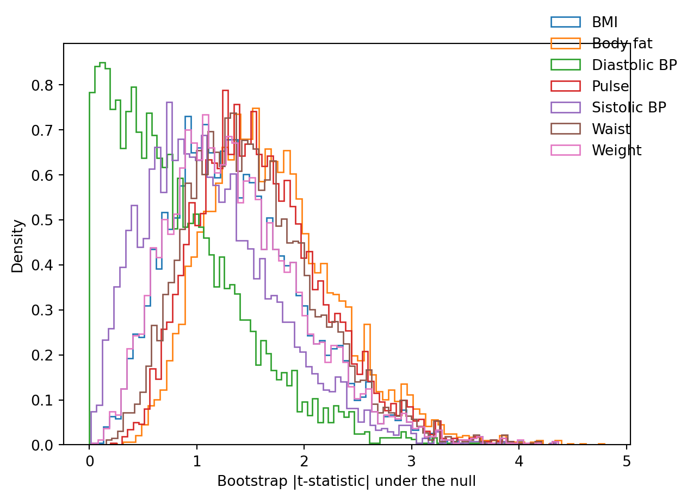
Null distributions for each outcome
Now, finally, let’s just calculate our Romano-Wolf p-values. Here–and as laid out in the book–we simply wish to compare our original t-values with those in the null distribution in each case. If our original t-values are extreme compared to the null distribution, this results in a low p-value (and strong evidence against the null), while if our original t-values appear likely to occur when the null is true, we will have little evidence to reject the null. We calculate our p-values below, where as above, we enforce monotonocity to avoid unordered p-values in final tests:
prev =0.0null_cols = [f"null_{v}"for v in vars_]for i, v inenumerate(vars_): p = np.mean(bstraps[null_cols[i]] >abs(tstat[v]))if p < prev: p = prev pvalues.loc[v, "Romano-Wolf"] = p prev = pprint(pvalues)
Here we see that as expected, Romano-Wolf p-values are lower, and at times substantially lower, to the values from Holm. We also see that for the final test, these p-values are the same (subject to some minor bootstrap variance), as the uncorrected p-values. In general, we see here the benefits in terms of power which we may expect in this case.
Finally note, that while it is very useful to see that we can calculate such p-values by hand, there are also libraries available which implement these automatically. Below we use the the rwolf function from the pyfixest library which automates the procedure we have conducted above, returning to us the Romano-Wolf p-values, along uncorrected p-values and Bonferroni p-values for comparison. These values (for rwolf) are essentially identical (subject to bootstrap variation) to what we calculated by hand ourselves.
import pyfixest as pf# Fit all 7 models using pyfixest's feolsfits = [pf.feols(f"{v}_diff ~ eight", data=df, vcov="HC1") for v in vars_order]# Romano-Wolf correctionrw_results = pf.rwolf(fits, param="eight", reps=5000, seed=121316)print(rw_results)# Bonferroni for comparisonbonf_results = pf.bonferroni(fits, param="eight")print(bonf_results)
Code call-out 7.3: Principal Components, Summary Indexes and Anderson’s Index
In this code call-out, we will consider multiple hypothesis testing with some simulated data and use these simulations to understand why the decision of which type of index to use is not innocuous.
A Simple Illustration of Over-Rejection with Multiple Hypotheses
To begin, let’s just consider how we may explore a controlled simulation with multiple hypothesis testing. Specifically, let’s imagine that we wish to run the following regression: \[
y_i^k=\alpha + \tau^k Treat_i + \varepsilon_i^k \forall k\in\{1,\ldots,K\}.
\] Here we use the super-index \(k\) to indicate that these are different outcome variables (in particular \(K\) different outcome variables), and these are regressed on a single treatment value. Let’s conduct some simulations where the true treatment effect for each of these models \(\tau^k\) is indeed 0. Let’s also simulate a treatment variable for 100 observations such that half of the population is randomly assigned treatment, and the other half is not assigned treatment. We will simulate each \(\varepsilon_i\sim\mathcal{N}(0,1)\). Then, let’s estimate the effect \(\tau^k\) in each case, and see if we reject the (true) null hypothesis that \(\tau^k=0\).
We can do this quite simply below, where we first set 100 observations and then generate a single treatment variable as treat. We will then simulate for \(K=10\) outcomes where the treatment effect is indeed 0, and run the regression of each outcome on treatment one at a time:
import numpy as npimport pandas as pdimport statsmodels.api as smfrom scipy.stats import normnp.random.seed(121316)K =10n =100# numeric 0/1 treatmenttreat = (np.random.rand(n) >0.5).astype(int)for k inrange(1, K +1):# DGP: constant 2, no treatment effect, plus noise y =2+0* treat + np.random.normal(size=n)# OLS: y ~ const + treat X = sm.add_constant(pd.Series(treat, name="treat")) model = sm.OLS(y, X).fit() beta = model.params["treat"] se = model.bse["treat"] z = beta / se p_val = norm.cdf(abs(z))print(f"p-value of test {k} is: {p_val:g}")
p-value of test 1 is: 0.516326
p-value of test 2 is: 0.993088
p-value of test 3 is: 0.940506
p-value of test 4 is: 0.705052
p-value of test 5 is: 0.88389
p-value of test 6 is: 0.699802
p-value of test 7 is: 0.553478
p-value of test 8 is: 0.525627
p-value of test 9 is: 0.865563
p-value of test 10 is: 0.770806
In this particular example, we can see that of these 10 simulated outcomes where the treatment has no effect on each outcome \(y^k\), we correctly fail to reject the null hypothesis that the effect is 0 based on the 10 p-values resulting from the regression above if a critical value of \(\alpha=0.05\) is used. Of course, this is entirely dependent upon the particular simulation which we define with the random seed using in set seed. For this reason, to see the concerns about multiple testing more generally, we will repeat this process 5000 times, observing in each of the 5000 cases whether we (falsely) reject at least one hypothesis within our \(K\) hypotheses, or falsely reject at least two hypotheses within our \(K\) tests.
We do this below, where we have essentially replicated the above block of code, but we now repeat the test \(S=5000\) times and in each case we determine whether any hypotheses are rejected, saving these in a series variables. Finally, we can calculate the quantity of rejected hypotheses of the null of a zero effect (which, from our DGP, we know to be true), as well as the proportion of times we reject at least 1 null hypothesis and at least 2 null hypotheses within our class of \(K\) tests.
np.random.seed(1213)S =5000K =10rejectK =0# total number of rejected tests across all simspropK =0# count of sims with ≥1 rejectionprop2K =0# count of sims with ≥2 rejectionscrit = norm.ppf(0.975) # two-sided 5% test (|z| > crit)for s inrange(S):# binary 0/1 treatment treat = np.random.binomial(1, 0.5, size=100).astype(int) rejectAny =0for k inrange(K):# DGP: constant 2, no treatment effect, plus noise y =2+0* treat + np.random.normal(size=100)# OLS: y ~ const + treat X = sm.add_constant(pd.Series(treat, name="treat")) m = sm.OLS(y, X).fit() z = m.params["treat"] / m.bse["treat"]ifabs(z) > crit: rejectK +=1 rejectAny +=1if rejectAny >0: propK +=1if rejectAny >1: prop2K +=1mtr = rejectK / (K * S) # mean rejection rate across testsptr = propK / S # proportion of sims with ≥1 rejectionp2r = prop2K / S # proportion of sims with ≥2 rejectionsprint("Total Tests Rejected: ", rejectK)print("Mean Tests Rejected: ", f"{mtr:0.3f}")print("Proportion ≥1 rejections: ", f"{ptr:0.3f}")print("Proportion ≥2 rejections: ", f"{p2r:0.3f}")
Total Tests Rejected: 2566
Mean Tests Rejected: 0.051
Proportion ≥1 rejections: 0.410
Proportion ≥2 rejections: 0.089
In this case, we see that (as expected), while only 5% of all hypotheses are rejected (or, to be exact, 5.4%), when we consider the number of times that at least 1 hypothesis is rejected, this is much higher, at 41.8%. What’s more, if we consider cases with at least 2 rejections, we see that this is also far higher that 5%, at around 9.4%.
Of course, the degree to which such overrejections occurs will depend upon the number of false null hypotheses considered. Below we can see this where we simply replicate the above analysis, however here instead of doing this just for \(K=10\) variables, we do it for a range of values. This simply adds an outer loop around the procedure above, considering \(K=1, 2, \ldots, 20\) variables within a family of tests, where in each case there is no effect of treatment on any of the variables considered.
Finally, to view the output, we can simply plot the rate of rejections of all hypotheses considered by the number of hypotheses tested, as well as the proportion of times that at least 1 hypothesis is rejected. We do this in the graph below:
import matplotlib.pyplot as plt# reshape to long formatdf_long = results.melt( id_vars="numvars", value_vars=["propreject", "prejectAny"], var_name="Metric", value_name="Proportion")# relabel metricsmetric_labels = {"propreject": "Proportion of all hypotheses","prejectAny": "Proportion at least 1 rejection"}df_long["Metric"] = df_long["Metric"].map(metric_labels)# plotplt.figure(figsize=(8, 5))for label, group in df_long.groupby("Metric"): plt.plot(group["numvars"], group["Proportion"], label=label)plt.ylabel("Proportion rejected hypotheses")plt.xlabel("Number of variables in class")plt.xticks(range(1, 21, 1))plt.legend(title=None)plt.grid(True, alpha=0.3)plt.tight_layout()plt.show()
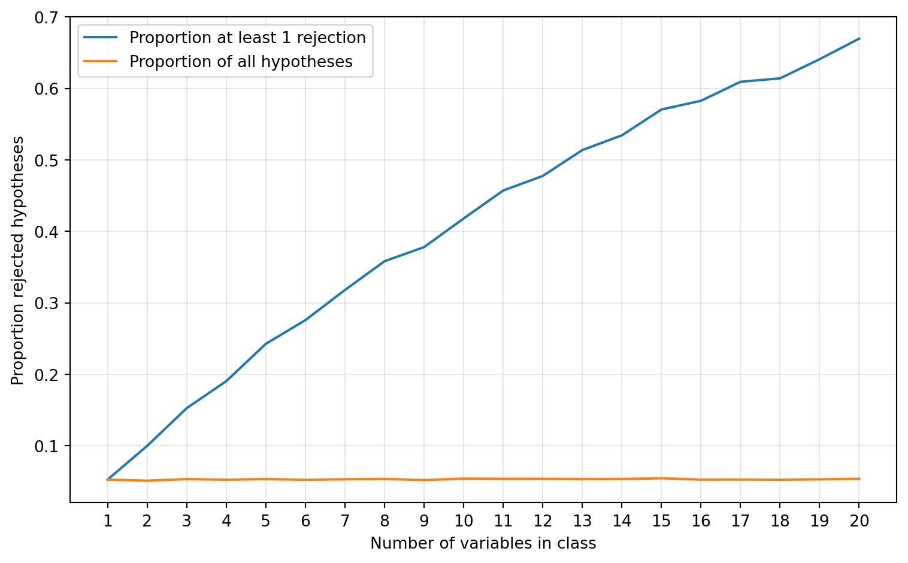
Family-level rejection rates
As expected, we can see that while the proportion of all rejected hypotheses is stable at around 5%, the number of times at least 1 hypothesis is rejected accumulates as the number of hypotheses tested grows, reaching very high levels (around 65%) when 20 hypotheses are in a class.
Indexes and Dimension Reduction
As laid out in the book, there are multiple ways to deal with this. One way is to seek to reduce the number of outcomes (and hence hypotheses) to a single aggregate measure. We will explore this here. If all variables are indeed entirely independent as in the simulations above, the way an index is formed is a relatively innocuous choice. However, when variables are correlated among themselves, as is likely the case in real empirical settings, we will see here that the choice of indexes is very much not innocuous. In order to explore this below, we will set up some simulations where unobserved errors corresponding to each outcome of interest are correlated among themselves. Specifically, we will seek to simulate a series of variables which depend upon unobservables drawn from a multivariate normal distribution such that: \((\varepsilon_i^1, \varepsilon_i^2, \ldots \varepsilon_i^K)\sim\mathcal{N}([0,0,\ldots,0], \Omega)\), where \(\Omega\) is a correlation matrix: \[
\Omega = \begin{bmatrix}
1 & \rho & \ldots & \rho \\
\rho & 1 & \ldots & \rho \\
\vdots & \vdots & \ddots & \vdots \\
\rho & \rho & \ldots & 1 \\
\end{bmatrix}
\] Thus, if \(\rho=0\) unobserved error terms will be completely independent, while if \(0<\rho\leq 1\), variables will be positively correlated. We will then simulate a single treatment variable \(Treat_i\) which takes 1 for around half of the observations and 0 for all others, and finally, simulate the outcomes themselves as: \[
y_i^k = \tau^k Treat_i + \varepsilon^k_i
\]
Below we will set up such a simulation based on 1,000 observations. In this simulation we will consider \(K=10\) strongly correlated variables (setting \(\rho=0.9\)), and additionally simulate one variable which is entirely uncorrelated with other variables. For 9 of the 10 uncorrelated variables we will set \(\tau^{k}=0\), while for the tenth variable, as well as the uncorrelated variable, we will set \(\tau=0.5\):
Now with these variables in hand, let’s consider three of the potential indexes discussed in the book. These are Anderson’s index which overweights variables which bring independent variation, a principal-components based index, and a simple summary index. Be we generate these below, we define our own function to implement the index described by Anderson (2008), and which takes as arguments a DataFrame, a series of variables to be used in the index, and an indicator of which observations are control units.
def anderson_index(df, y_vars, control_indicator):#Compute Anderson's (2008) inverse-covariance weighted index.# Subset to control group for computing means, SDs, and covariance df_control = df.loc[control_indicator, y_vars]# Standardise all outcomes using control group mean and SD means = df_control.mean() sds = df_control.std(ddof=1) y_std = (df[y_vars] - means) / sds# Estimate covariance matrix from control group (of standardised outcomes) y_std_control = y_std.loc[control_indicator] cov_matrix = y_std_control.cov()# Invert the covariance matrix cov_inv = np.linalg.inv(cov_matrix.values)# Weights are the row sums of the inverse covariance matrix weights = cov_inv.sum(axis=1)# Weighted average across outcomes for each observation (np.dot is matrix multiplication) index = np.dot(y_std.values, weights) / weights.sum()return pd.Series(index, index=df.index)
Finally, we generate our three indexes, and examine whether we detect any effect of treatment on each of the aggregate indexes using a simple OLS regression:
from sklearn.decomposition import PCAy_vars = [f"y{i}"for i inrange(1, 11)]# Anderson's index (uses function above)control = df["treat"] ==0df["AndersonIndex"] = anderson_index(df, y_vars, control)# Principal-component index (centered, not scaled)pca = PCA(n_components=1)df["PCIndex"] = pca.fit_transform(df[y_vars])# Summary indexdf["SumIndex"] = df[y_vars].sum(axis=1)# Regressions with robust SEs (HC1)for idx in ["AndersonIndex", "SumIndex", "PCIndex"]: X = sm.add_constant(df["treat"]) y = df[idx] res = sm.OLS(y, X).fit().get_robustcov_results(cov_type="HC1")print(res.summary().tables[1])
In this case, where there is a single true effect, we observe that if we consult the summary index or the principal components index we find some evidence of significant effect of treatment on aggregate outcomes. On the other hand, if we consult the Anderson index we observe very little evidence of a significant effect. However, below we consider precisely the same setting, but now instead of examining an index based on the 10 correlated variables (with one true effect), we consider 9 correlated variables (with no effects), and 1 uncorrelated variable with a true effect.
vars2 = [f"y{i}"for i inrange(1, 10)] + ["y11"]df["AndersonIndex2"] = anderson_index(df, vars2, control)pca2 = PCA(n_components=1)df["PCIndex2"] = pca2.fit_transform(df[vars2])df["SumIndex2"] = df[vars2].sum(axis=1)for idx in ["AndersonIndex2", "SumIndex2", "PCIndex2"]: X = sm.add_constant(df["treat"]) y = df[idx] res = sm.OLS(y, X).fit()print(res.summary().tables[1])
In this case we see that our conclusion is very different. Now the Anderson index strongly suggests some statistically significant treatment effect, while the principal components based index suggests little evidence of a statistically significant effect. Of course this should not surprise us if we consider what the indexes do “under the hood”: Anderson’s index overweights variables which bring independent variation, while principal components seeks to pick up underlying signals, and hence will downweight variables if they are quite unrelated to others within the class.
To see that this is not a statisical curio with this specific simulation, below we can generalise this, running \(S=500\) simulations. In each simulation we will consider these three types of indexes: the Anderson index, principal components, and a summary index. We will also consider 4 specific cases. A first case where there are no significant treatment effects for any of the variables, a second case where there is one significant treatment effect from a correlated variable, a third case where there is one significant treatment effect from an uncorrelated variable, and a fourth case where there is a significant treatment effect on all of the 10 variables considered. We will then examine the distribution of t-statistics from each of the simulations and each of the index types. We set up these simulations below:
This results in a series of variables which contain the t-statistics of resulting tests, and we can plot these to see how each index performs. We do this below, starting with the Anderson Index:
vars_Anderson = ["AndersonA_t","AndersonB_t","AndersonC_t","AndersonD_t"]xlims = (-3, 11)xbreaks = np.arange(-3, 12, 1)for var in vars_Anderson: data = results[var].dropna() plt.figure(figsize=(6,4))# histogram as density plt.hist(data, bins=30, density=True, color="grey", edgecolor="black") x = np.linspace(-3, 11, 400) plt.plot(x, norm.pdf(x, 0, 1), color="red") plt.xlim(xlims) plt.xticks(xbreaks) plt.xlabel("t statistic") plt.ylabel("Density") plt.grid(False) plt.tight_layout() plt.show() plt.close()
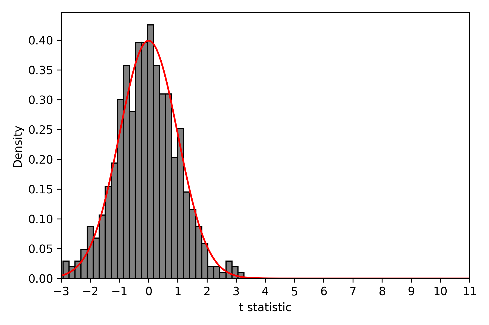
All null effects
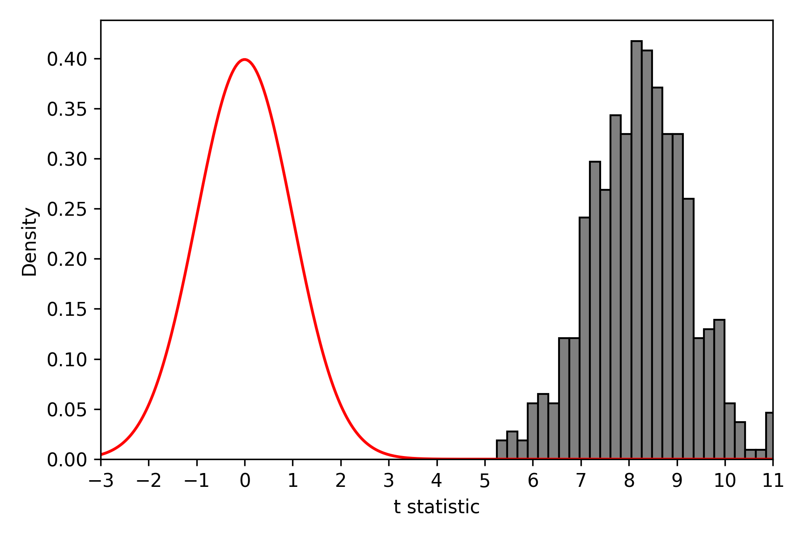
All non-zero effects
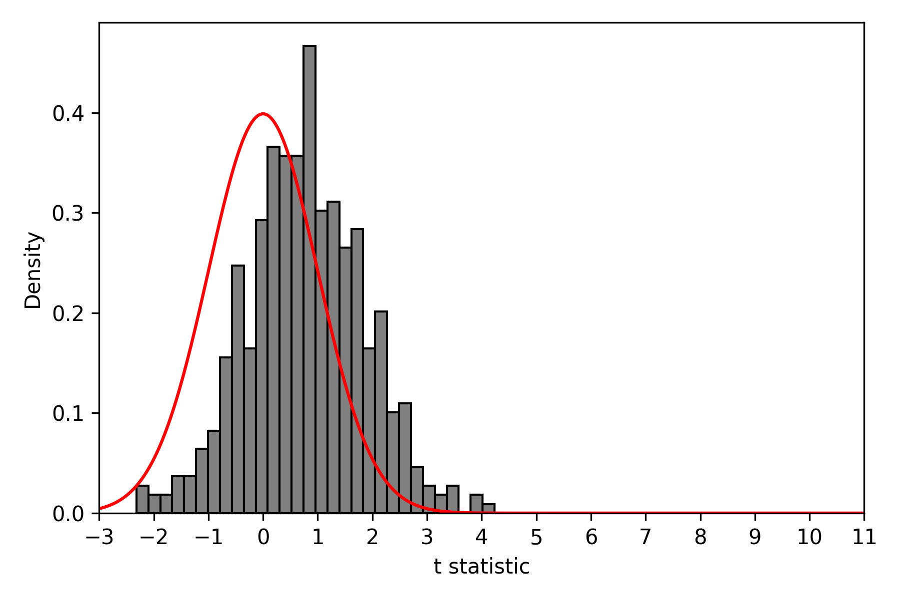
1 correlated non-zero effect
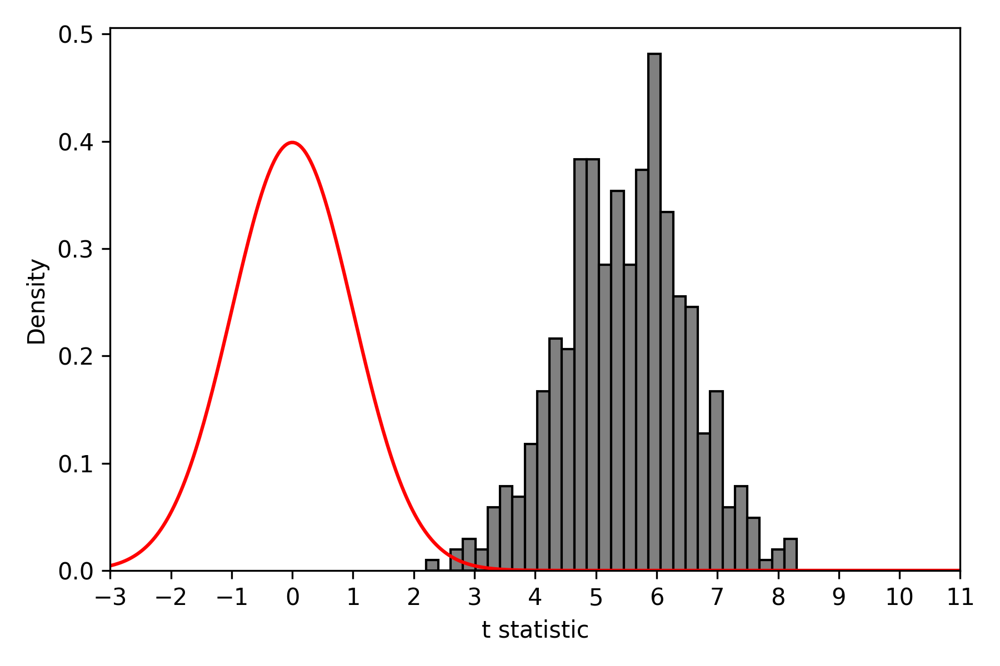
1 independent non-zero effect
Figure 1: Anderson’s Index: Distribution of t-statistics by outcomes considered
In this case we see that – as we may hope – the distribution of t-statistics we observe in panel (a), based on pure null effects, lines up nearly perfectly with a normal distribution centred around 0 (ie consistent with zero effects). This is clearly different in panel (b) where all non-zero effects are considered, with t-statistics based on an Anderson Index all suggestive of non-zero effects. Panel (c), based on a single true effect which is highly correlated with all zero effects suggests relatively little evidence to reject null hypotheses of zero effects. However, panel (d), which is based on the same structure as panel (c) but now with an uncorrelated effect shows clear evidence against the null of zero effects.
Below we compare this to the case where we consider a principal components analysis. We build identical graphs based on principal components instead of the Anderson Index:
vars_pc = ["PCA_t", "PCB_t", "PCC_t", "PCD_t"]for var in vars_pc: data = results[var].dropna() plt.figure(figsize=(6,4)) plt.hist(data, bins=30, density=True, color="grey", edgecolor="black") x = np.linspace(xlims[0], xlims[1], 400) plt.plot(x, norm.pdf(x, 0, 1), color="red") plt.xlim(xlims) plt.xticks(xbreaks) plt.xlabel("t statistic") plt.ylabel("Density") plt.grid(False) plt.tight_layout() plt.show() plt.close()
All null effects
All non-zero effects
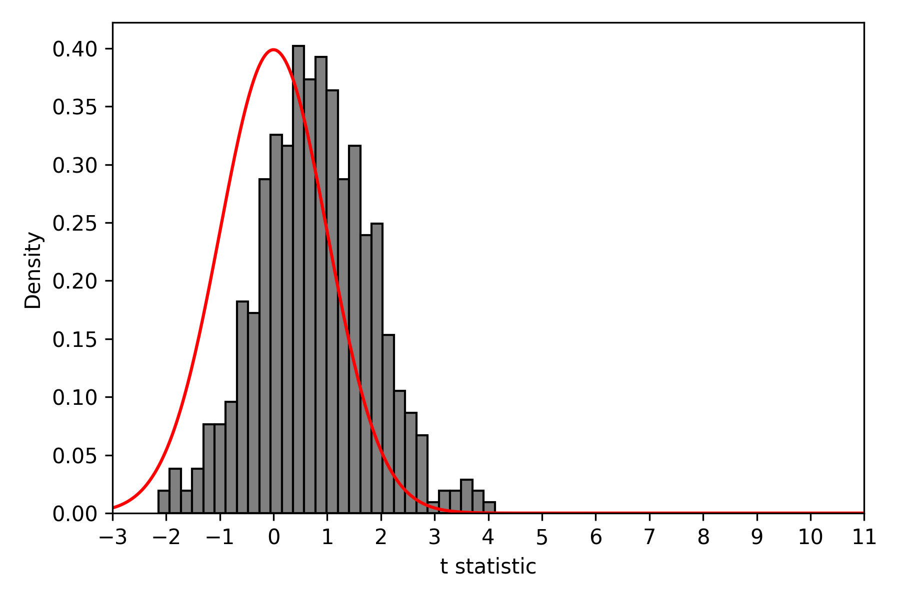
1 correlated non-zero effect
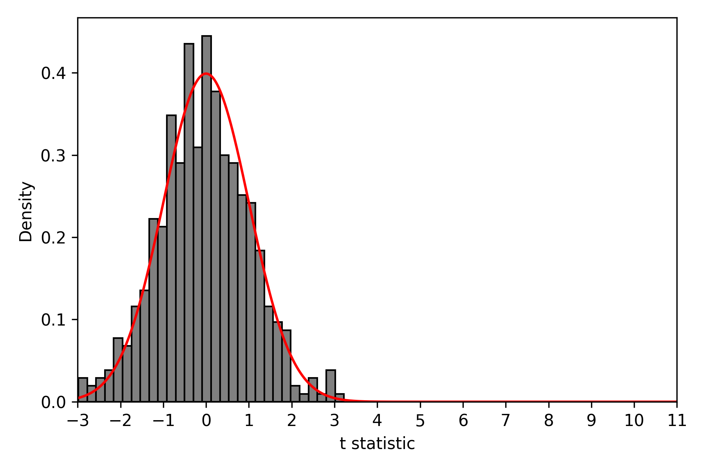
1 independent non-zero effect
Figure 2: Principal Component Index: Distribution of t-statistics by outcomes considered
Now we see quite different patterns in panel (c) and (d). While panels (a) and (b) are virtually identical, in cases where only certain effects are observed, our conclusions appear to be quite different. While there is some evidence that t-statistics are slightly shifted in the case of a single correlated effect, we see no evidence at all to reject the null where our single effect is independent of other variables, as documented in panel (d).
If we consider the simply summary index we observe a case between the Anderson Index and the Principal Components index. In this case the t-statistics in both panels (c) and (d) appear to be slightly shifted, though this is not as extreme as the cases above which (respectively) mechanically give more weight to the uncorrelated non-zero effect and correlated non-zero effect.
for var in ["SumA_t", "SumB_t", "SumC_t", "SumD_t"]: data = results[var].dropna() plt.figure(figsize=(6,4)) plt.hist(data, bins=30, density=True, color="grey", edgecolor="black") x = np.linspace(-3, 11, 400) plt.plot(x, norm.pdf(x, 0, 1), color="red") plt.xlim(xlims) plt.xticks(xbreaks) plt.xlabel("t statistic") plt.ylabel("Density") plt.grid(False) plt.tight_layout() plt.show() plt.close()
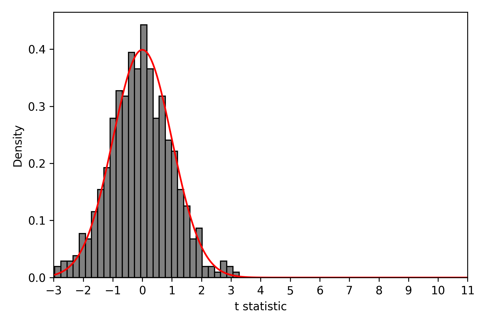
All null effects
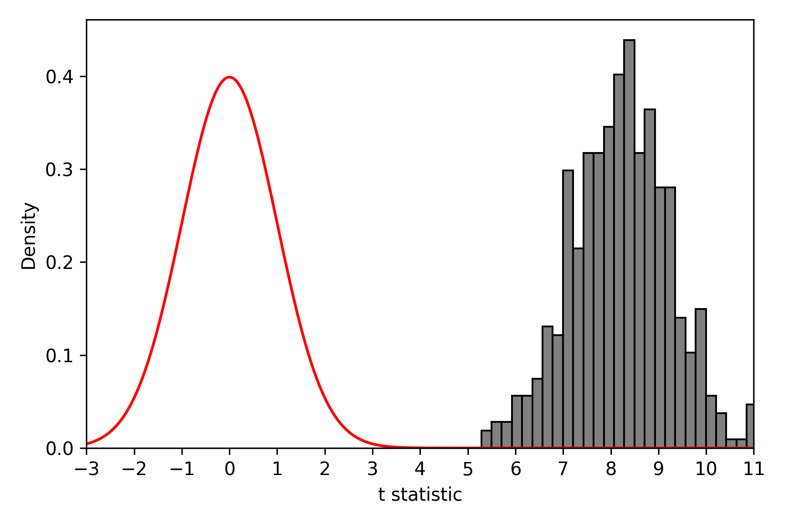
All non-zero effects
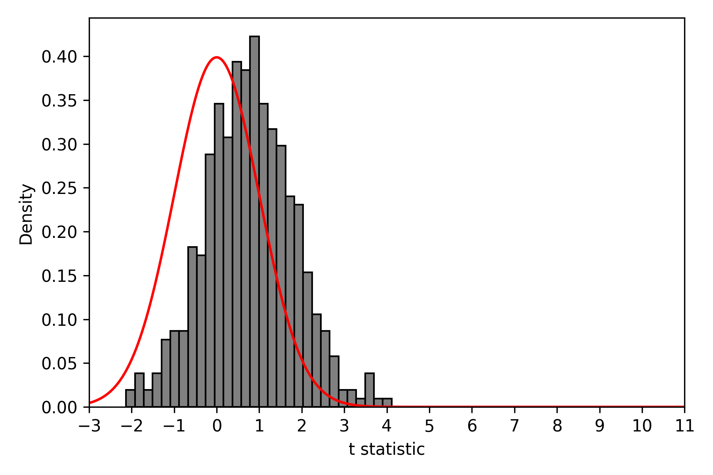
1 correlated non-zero effect
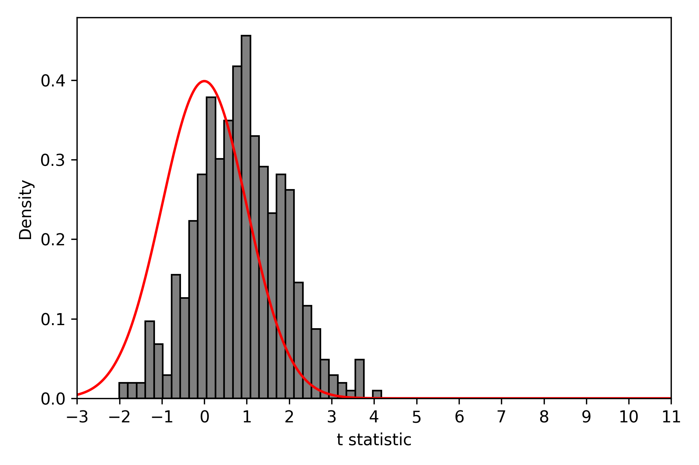
1 independent non-zero effect
Figure 3: Summary Index: Distribution of t-statistics by outcomes considered
These patterns illustrate the importance of considering what type of index should be used if seeking to reduce multiple hypothesis tests to a single dimension. These are of course extreme cases based on a single non-zero effect among a class of outcomes (or cases where all or no significant treatment effects exist). You may wish to further explore these simulations by varying correlation structures, the number of significant effects, effect sizes and so forth. What is clear even from these simple structures however is that the choice of indexes is not innocuous, and we should take into account the nature of the effects being tested, whether we believe it is correct to overweight certain types of variables in our analysis, and where variation in effects comes from when determining how to aggregate underlying variables.
References
Alan, Sule, and Elif Kubilay. 2025. “Empowering Adolescents to Transform Schools: Lessons from a Behavioral Targeting.”American Economic Review 115 (2): 365–407. https://doi.org/10.1257/aer.20240374.
Anderson, Michael L. 2008. “Multiple Inference and Gender Differences in the Effects of Early Intervention: A Reevaluation of the Abecedarian, Perry Preschool, and Early Training Projects.”Journal of the American Statistical Association 103 (484): 1481–95.
Charness, Gary, and Uri Gneezy. 2009. “Incentives to Exercise.”Econometrica 77 (3): 909–31. https://doi.org/https://doi.org/10.3982/ECTA7416.